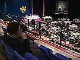

Synod'98 Coverage Now Concluded
MONTREAL (May 29, 1998)
 In a nine-day meeting here, the Anglican Church of Canada’s chief governing body
approved legislation bringing the church closer to Lutherans, opposing euthanasia and
cloning, and expressing the church’s support to partner churches in several oppressed
or war-torn countries.
In a nine-day meeting here, the Anglican Church of Canada’s chief governing body
approved legislation bringing the church closer to Lutherans, opposing euthanasia and
cloning, and expressing the church’s support to partner churches in several oppressed
or war-torn countries.
 The church also approved motions asking for government action on several social
policy issues.
The church also approved motions asking for government action on several social
policy issues.
 In the first meeting it has held in Montreal in 30 years, the 300-member General Synod
also spent a considerable amount of time reflecting on "nation and identity" and on
what it means to be a minority voice in a society as diverse as Canada’s.
In the first meeting it has held in Montreal in 30 years, the 300-member General Synod
also spent a considerable amount of time reflecting on "nation and identity" and on
what it means to be a minority voice in a society as diverse as Canada’s.
 The theme of this General Synod, a body which meets every three years in a different
part of the country, was "Lift every voice -- Faisons entendre nos voix" which was
meant to help members focus on those who are often ignored or unheard.
The theme of this General Synod, a body which meets every three years in a different
part of the country, was "Lift every voice -- Faisons entendre nos voix" which was
meant to help members focus on those who are often ignored or unheard.
 In his opening address at the start of synod, Archbishop Michael Peers, the primate, set
the tone when he told delegates that one of the least heard voices in the Canadian
Anglican church was that of French Canada. He challenged synod members to pay
particular attention to that voice during the gathering.
In his opening address at the start of synod, Archbishop Michael Peers, the primate, set
the tone when he told delegates that one of the least heard voices in the Canadian
Anglican church was that of French Canada. He challenged synod members to pay
particular attention to that voice during the gathering.
 Synod members spent a whole evening listening to panel members representing
different voices or geographical parts of the country speak about what it means to be a
part of the Canadian whole.
Synod members spent a whole evening listening to panel members representing
different voices or geographical parts of the country speak about what it means to be a
part of the Canadian whole.
 Synod members also heard a presentation from the church’s indigenous members, a
group that is working to implement a "Native Covenant" which would give it greater
autonomy within the church.
Synod members also heard a presentation from the church’s indigenous members, a
group that is working to implement a "Native Covenant" which would give it greater
autonomy within the church.
 Host bishop Andrew Hutchison of Montreal delivered a major address in which he
expressed the difficulties involved in leading a church that represents a very small
number of Anglophones in an overwhelmingly Francophone province.
Host bishop Andrew Hutchison of Montreal delivered a major address in which he
expressed the difficulties involved in leading a church that represents a very small
number of Anglophones in an overwhelmingly Francophone province.
 In his speech, Bishop Hutchison also argued that while the church has no mandate to
play a role in partisan politics, it is bound by conscience to take strong positions on
matters involving principles such as peace, justice and reconciliation.
In his speech, Bishop Hutchison also argued that while the church has no mandate to
play a role in partisan politics, it is bound by conscience to take strong positions on
matters involving principles such as peace, justice and reconciliation.
 Synod members took him to heart, passing more than a dozen resolutions affirming the
Canadian church’s stand against oppression, injustice, violence and war in several
parts of the world.
Synod members took him to heart, passing more than a dozen resolutions affirming the
Canadian church’s stand against oppression, injustice, violence and war in several
parts of the world.
 Through some of these resolutions, the Canadian Anglican church offered expressions
of solidarity to partner churches and the people of Kenya, Sudan and Columbia who
suffer from war or political oppression. Members voted to ask Ottawa to play a greater
mediation role between Cuba and the United States.
Through some of these resolutions, the Canadian Anglican church offered expressions
of solidarity to partner churches and the people of Kenya, Sudan and Columbia who
suffer from war or political oppression. Members voted to ask Ottawa to play a greater
mediation role between Cuba and the United States.
 Meeting the week that Pakistan exploded a number of nuclear devices in response to
similar tests carried out by India, synod delegates called on the Canadian government
to renounce the use of nuclear weapons and to exert pressure on other governments to
do so as well.
Meeting the week that Pakistan exploded a number of nuclear devices in response to
similar tests carried out by India, synod delegates called on the Canadian government
to renounce the use of nuclear weapons and to exert pressure on other governments to
do so as well.
 They voted to ask the church’s ecojustice committee to produce resources to enable
Canadian congregations "to study the Just War theory and its implications for Christian
response to war and militarism."
They voted to ask the church’s ecojustice committee to produce resources to enable
Canadian congregations "to study the Just War theory and its implications for Christian
response to war and militarism."
 Members also called on the federal government to initiate a broad process of public
consultation whenever it negotiates multilateral agreements on investment and trade
and to consider the implications of such pacts, especially on the most disadvantaged
members of society such as the elderly, the very young and indigenous peoples.
Members also called on the federal government to initiate a broad process of public
consultation whenever it negotiates multilateral agreements on investment and trade
and to consider the implications of such pacts, especially on the most disadvantaged
members of society such as the elderly, the very young and indigenous peoples.
 Members also voted to ask the Prime Minister to apologize to Inuit people displaced
from traditional hunting areas on the east coast of Hudson Bay and Baffin Island to the
High Arctic in the 1950s;
Members also voted to ask the Prime Minister to apologize to Inuit people displaced
from traditional hunting areas on the east coast of Hudson Bay and Baffin Island to the
High Arctic in the 1950s;
 In the area of social policy, General Synod approved resolution saying it cannot
support euthanasia and assisted suicide. The resolution described such measures as "a
failure of human community."
In the area of social policy, General Synod approved resolution saying it cannot
support euthanasia and assisted suicide. The resolution described such measures as "a
failure of human community."
 The church also called on Ottawa to prohibit the cloning of human beings.
The church also called on Ottawa to prohibit the cloning of human beings.
 The resolution with what may have the broadest impact for the Anglican community
itself, was one commending for study a report urging "full communion" between
Canadian Anglicans and the Evangelical Lutheran Church in Canada.
The resolution with what may have the broadest impact for the Anglican community
itself, was one commending for study a report urging "full communion" between
Canadian Anglicans and the Evangelical Lutheran Church in Canada.
 Full communion would not be an actual merger of the two churches, but means that
each would recognize the other’s clergy, rites and sacraments. It could lead to extensive
sharing of resources and even personnel between the two denominations. Reactions to
that report will be gathered by both churches in the next three years and considered
again when their respective governing bodies next meet in the year 2001.
Full communion would not be an actual merger of the two churches, but means that
each would recognize the other’s clergy, rites and sacraments. It could lead to extensive
sharing of resources and even personnel between the two denominations. Reactions to
that report will be gathered by both churches in the next three years and considered
again when their respective governing bodies next meet in the year 2001.
 One of the most arduous parts of the proceedings, held in a sweltering gymnasium at
McGill University, was a debate on "human rights principles" for church members and
employees that would have legislated protection from discrimination on the basis of
age, sex, sexual orientation, family or marital status, race, colour, ethnic origin, ancestry,
disability, creed and socio-economic status.
One of the most arduous parts of the proceedings, held in a sweltering gymnasium at
McGill University, was a debate on "human rights principles" for church members and
employees that would have legislated protection from discrimination on the basis of
age, sex, sexual orientation, family or marital status, race, colour, ethnic origin, ancestry,
disability, creed and socio-economic status.
 The often emotional debate on that resolution stretched over three days and the
proposal was ultimately narrowly defeated after synod members failed to agree on a way
to marry theological concerns to language more commonly associated with civil courts
proceedings.
The often emotional debate on that resolution stretched over three days and the
proposal was ultimately narrowly defeated after synod members failed to agree on a way
to marry theological concerns to language more commonly associated with civil courts
proceedings.
 General Synod, which consists of bishops, clergy and lay people elected to the task in
each of the church’s 30 dioceses, meets every three years.
General Synod, which consists of bishops, clergy and lay people elected to the task in
each of the church’s 30 dioceses, meets every three years.
What would you do next Synod?
Now that the General Synod is closed, we'd love to hear how you found Internet
coverage. Would you like it again at General Synod 2001? What would you do
differently? Email your comments to Doug Tindal, director of information resources,
at dtindal@national.anglican.ca.
General Synod Discussion List
A lightly-moderated discussion mailing list you can participate in. Join Synod
members and organizers in chatting about hot issues, resolutions, and other issues close
to the Anglican Church of Canada.
Here's how to join:
Send an email message to
majordomo@anglican.ca
with the words "subscribe acc-synod98" in the body of the message.
Backstage
Take a look behind the scenes of the web and TV
coverage at Synod98 -- who we were and how we made it all happen.
Behind the Scenes: How We Did It
Wondering how it all worked behind the scenes, bringing you live General Synod
coverage on the web and email? Here's a special feature on our electronic news
coordinator, who (now that Synod is over) can now be reached at his personal email address
of tmaffin@direct.ca
Special
thanks!
Here's a list of all the people who helped make this live Internet coverage of
General Synod a reality!
Diary of a Newbie
This was
Paul Feheley's first General Synod. Did it prove to be everything it was cracked up to
be? Find out in this look into the mind of a Synod "newbie."
Extreme Synod

She's attended
Synods and General Convetions from nearly every corner of the Anglican communion. And
after watching the Canadian General Synod from the visitors' bleachers, British seminary
student Leslie Lorensen reflected on our synod.
On
the Air!
Here were the lineups and behind the scenes
information of the nightly Vision TV television programs.
Youth
Members
They
weren't all students... Meet the farmers, mechanical engineers, environmental risk
analysts, and massage therapists who were part of the 1998 youth caucus.